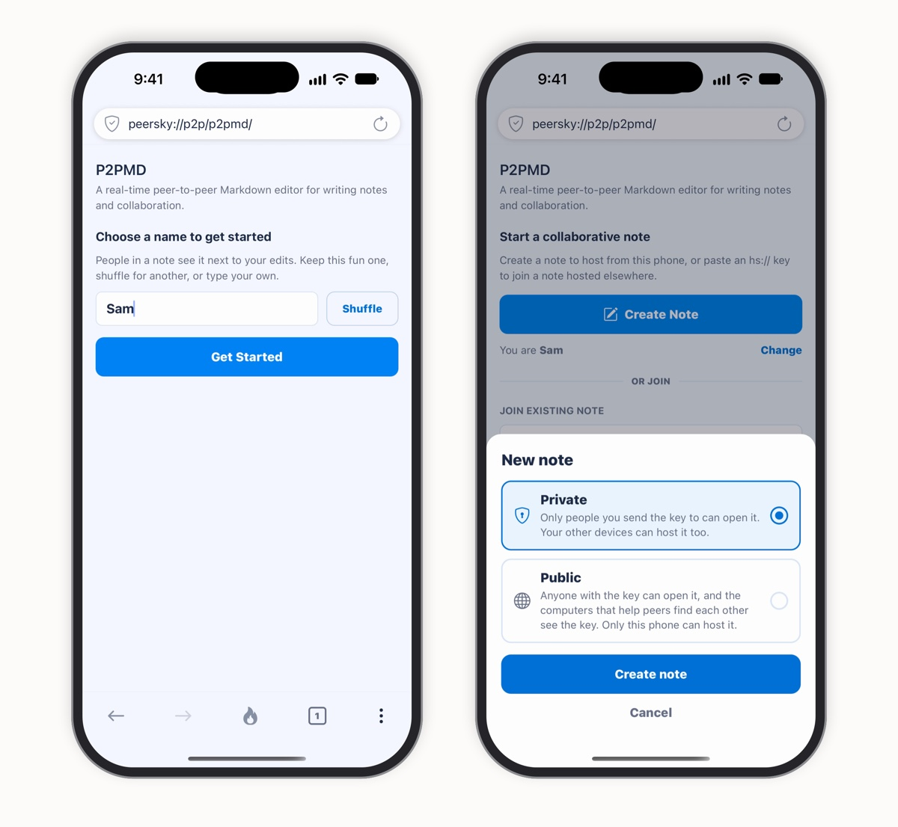
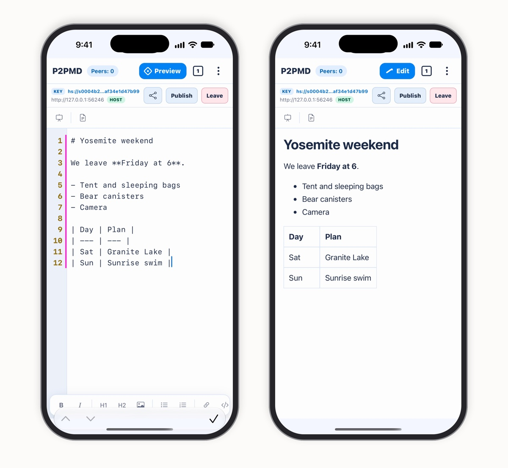
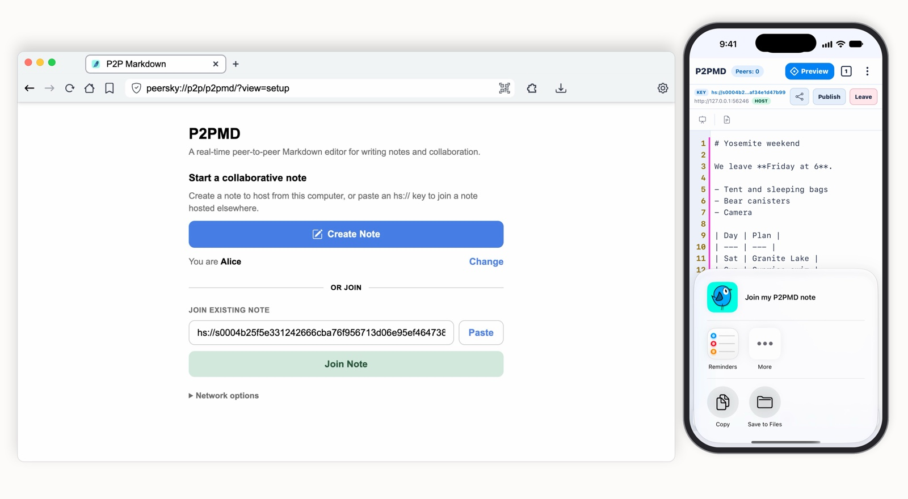
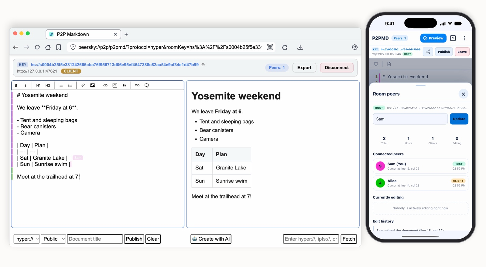
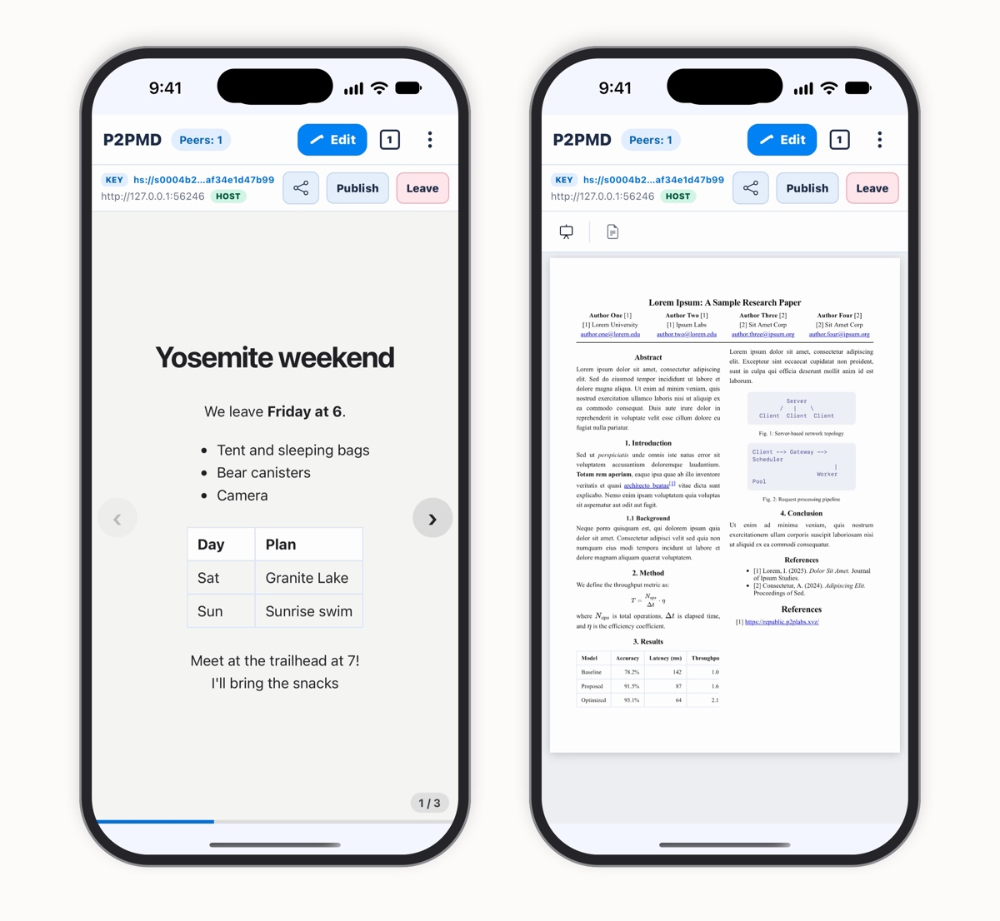
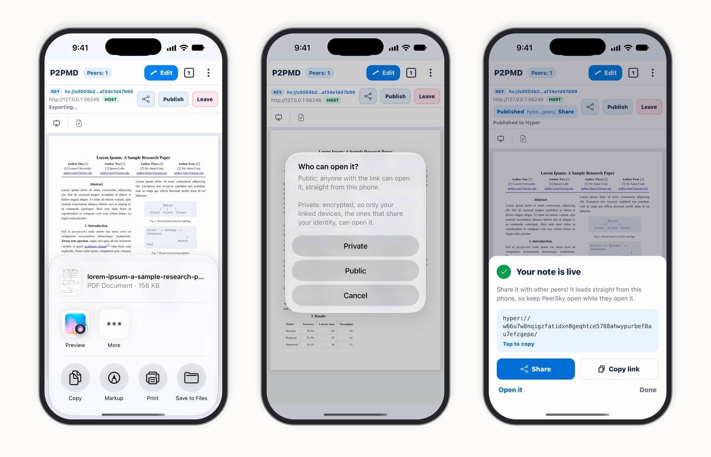
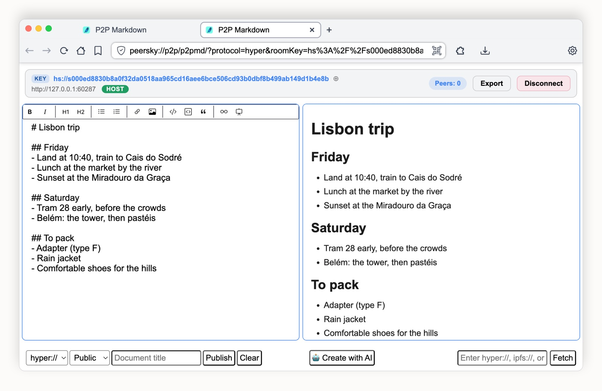

P2PMD (Peer-to-Peer Markdown) is the note app in PeerSky, on your computer and on your phone. Many people can write in the same note at once and watch each other's words show up as they're typed. There's no account and no server. The note lives on the device of whoever started it, and everyone else connects straight to that device.
It's for anyone who writes with other people: a study group, a class, a meeting taking minutes, a team writing docs or the slides for a talk, or two researchers on one paper. We built it because notes like these have no reason to sit on a company's computer. Nothing goes through one, so there's no copy of your note out there to leak or sell. And when the internet goes down, people on the same Wi-Fi keep writing.
You need PeerSky on each device. Get it for your computer and your phone at peersky.p2plabs.xyz.
1. Start a note
Open P2PMD from the PeerSky home screen. It gives you a name to start with, something like Zany Seal or Fluffy Kiwi, which people in a note see next to your edits. Keep it, shuffle for another, or type your own. Then tap Create Note.
P2PMD asks just one thing: private or public. Every note starts private. Only the people you send its key to can open it, and your other devices can host it too. A public note opens for anyone with its key, and the computers that help peers find each other on the network see that key as well, so keep public for notes you don't mind being found.

2. Write in Markdown
Notes in P2PMD are Markdown: plain text with a few marks for headings, bold, lists and tables. You don't have to learn them first. The bar above the keyboard has buttons for bold, italic, headings, lists, links and pictures. Tap Preview to read the note the way it looks, and Edit to go back to writing.

3. Invite people
Tap the share button and choose Share invite. It sends the note's key, a Holesail key that starts with hs://, in whatever app you like: Messages, Signal, email. The key is what lets someone in, so send it only to the people you want writing with you.
On the other device, open P2PMD, paste the key under Join existing note and press Join Note. On a phone, Scan QR reads a key from a QR code too. P2PMD looks for the device hosting the note, connects to it, and the note opens with everything written so far.

4. Write together
Now everyone writes in the same note at once, each in their own color. You see everyone's cursor with their name on it, and a colored mark beside each line shows who wrote it. Two people typing on the same line at the same moment? P2PMD merges their edits with Yjs, so both make it in, and nothing gets lost.
Tap the Peers count to see who's in the note: who's hosting and who joined, where each cursor is, who's typing right now, and a history of who changed what.

How it works
Most writing apps keep your document on a company's server. Everyone's edits go up to it, it puts them together, and it sends the result back down to everyone. In P2PMD, the device that starts a note does that job, and everyone else connects straight to it.
Where the note lives
With a serverOn the company's computers.
In P2PMDOn the device that hosts it: your phone or your computer.
Finding each other
With a serverEveryone goes to the same web address.
In P2PMDThe host opens the note through Holesail, which announces it on HyperDHT, a public peer-to-peer network. People with the key find it there and connect directly, through an encrypted Holesail tunnel. On the same Wi-Fi, they look on the local network first.
Letting people in
With a serverIt checks your password.
In P2PMDThe key is the way in. A private note's address on the network is made from its key, so finding the address isn't enough to open it.
Putting edits together
With a serverIt decides the order of everyone's changes.
In P2PMDEach edit travels as the small change it made, a Yjs update, and every device puts the changes together the same way, so edits typed at the same moment never wipe each other out.
Staying up
With a serverWhen it goes down, nobody can write.
In P2PMDThe note is live while its host has it open. If the host steps away, everyone can still read it, and writing comes back when the host does. A private note on your own devices can be hosted by any of them.
No internet
With a serverNothing works.
In P2PMDOn the same Wi-Fi, a note opens and stays in sync with no internet at all.
The note's key only travels in the invite you send. No server in between.
A note is meant for a class or a team, up to about 100 people. Everyone connects to the host, so the host's upload speed is what sets the limit. Each edit goes out as just the change it made, never the whole note again, which keeps that small even when many people type at once. In our load test, 100 simulated people shared one note, 10 of them typing nonstop for a minute. Every edit made it in, with a phone or a computer hosting, and everyone ended up with the same note.
On an iPhone, iOS pauses PeerSky about 15 seconds after you leave it, and a note the phone hosts goes quiet until you come back. For a long session or a big group, host the note from a computer.
Devices connect straight to the note's host, so the host and the people joining can see each other's IP address, as in any peer-to-peer app. If you'd rather they didn't, turn on a VPN that allows peer-to-peer connections.
Slides and papers
Put three dashes (---) on a line between the parts of a note, and P2PMD shows it as slides you can flip through. It's still the same note, so you can write a talk together and present it from your phone or your laptop. On the desktop, notes for the speaker go in as comments, and the slides leave them out.
For papers, the Research Paper template starts you off with a title, authors, an abstract and sections, and Preview lays it out in two columns, the way journals print it. You write math in LaTeX, and it's drawn right in the note, with no internet needed. There's a Technical Documentation template too.

Share what you wrote
When it's ready, Export PDF saves the note as a PDF to send or print, with a paper kept in its two columns. Or tap Publish to put it on the peer-to-peer web as a hyper:// link. Publish asks who can open it: anyone with the link, or only your own linked devices, encrypted. A link published from your phone loads straight from it, so keep PeerSky open while people open it. On the desktop, Export also saves HTML and slides, and Publish can use IPFS too.

Your notes on all your devices
With Link Device, your phone and your computers share one profile. Your name and your five most recent notes come along, so a private note you started on your phone opens on your laptop too, and either one can host it. If one of them already has it open, the other joins it there, and both edit the same note live.
The desktop has a few extras. Open a text file with P2PMD from Finder, Explorer or your Linux file manager and it becomes a new private note, ready to share. On a Mac, right-click the file and pick Peersky Browser under Open With. On Windows, pick Open with P2PMD, and on Linux with the .deb, open it with P2PMD.

And Create with AI can draft a note or a set of slides for you with a local LLM running on your own computer, once you turn it on in Settings.
What people use it for
Class and study notes
Take notes together during a lecture, even when the campus Wi-Fi has no internet, and everyone walks out with the same copy.
Meeting notes
Everyone writes the minutes while the meeting happens, so they're finished when it ends.
Talks and slides
Write the slides together, then present them from your laptop or your phone.
Papers with math
Start from the Research Paper template, write the math in LaTeX, and export a two-column PDF.
For the technical details, read the P2PMD README, P2PMD on mobile, how notes open with no internet, and Link Device.
Bring it to your next class or meeting, and let everyone write. Get PeerSky at peersky.p2plabs.xyz.